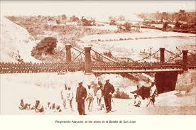

📍 Ubicación
El Desierto de Atacama se encuentra en el norte de Chile, extendiéndose por aproximadamente 1600 km entre la Cordillera de los Andes y la Cordillera de la Costa. Limita con Perú al norte y con el desierto de Coquimbo al sur.

🌞 Clima
Es considerado el desierto más árido del mundo. En algunas zonas no se han registrado lluvias durante siglos. Sus temperaturas son extremas: días muy calurosos y noches frías.

⚔️ El Desierto en la Guerra del Pacífico
El Desierto de Atacama fue escenario clave de la Guerra del Pacífico (1879 - 1884), en la cual Chile, Bolivia y Perú se enfrentaron por el control de territorios ricos en salitre y guano, recursos muy valiosos en esa época.
Bolivia tenía el control del puerto de Antofagasta, pero en 1879 Chile lo ocupó tras disputas sobre impuestos a compañías chilenas. Esto marcó el inicio de la guerra.
Durante el conflicto, el árido desierto dificultó el avance de los ejércitos: las tropas debían enfrentar falta de agua, altas temperaturas durante el día y frío intenso en la noche. Muchas bajas no fueron en batalla, sino por enfermedades y condiciones extremas.
Las batallas más importantes en la región fueron en Antofagasta, Iquique, Tacna y Arica. Finalmente, Bolivia perdió su acceso soberano al mar y el desierto de Atacama pasó a control chileno.

🌍 Turismo y Ciencia
Actualmente, el desierto es famoso por su paisaje único, con valles, salares y formaciones rocosas impresionantes. También es uno de los mejores lugares del planeta para la observación astronómica, gracias a su cielo despejado.